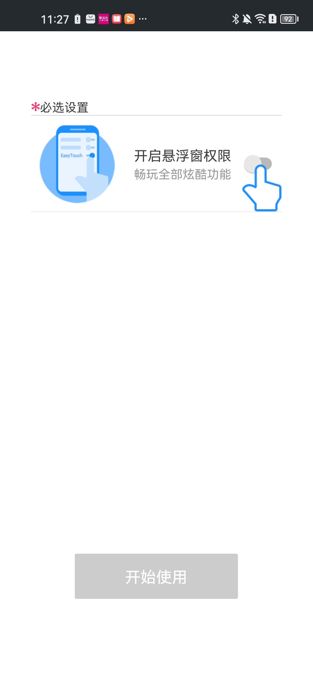

地铁上单手刷手机的那三年，一个悬浮球救了我的拇指
全面屏时代虚拟按键总被系统藏起来，我在通勤路上折腾出一套单手操作的手势组合拳——单击回桌面、双击清后台、左滑调音量，四年了还在那。
拇指快废掉的那阵子
2022 年换了第一台全面屏手机，我以为终于不用再被屏幕下方那三个固定按键占地方。结果系统把导航手势藏得特别深——上滑回桌面、上滑停顿看后台、侧滑返回……每一个都要精确地从屏幕边缘出发，偏偏我坐地铁的时候只能用一只手。
早高峰三号线挤得连掏耳机的空间都没有，手机在左手里被掌心夹得死死的，右拇指悬在屏幕上方不敢动弹。想回桌面？整个上半身都得跟着扭一下去够屏幕底部。想切应用？上滑停顿那一下，好几次直接把手机甩出去半寸。想截屏？电源键加音量键那组合，在人堆里按起来像在掏什么不可告人的东西。
那段时间真的在想，是不是我姿势不对，还是手机太大了。换小屏？不行，要看文档要刷视频。套个带磁吸指环的手机壳？指环在地铁里勾到过旁边的背包带，尴尬得能用脚抠出三室一厅。
朋友发我一个安装包
某天午休跟同事吐槽，他听完掏出手机给我看了个悬浮球——一个透明的小圆点飘在屏幕右边，他单击了一下直接回到桌面，双击了一下后台瞬间清空，左滑右滑音量加减。整个过程就是拇指在那个小圆点上点来点去，全在屏幕右半侧完成。
"EasyTouch，官网上有完整介绍，装一个试试。"
下午回到工位，从下载拿了安装包，花了不到五分钟装上。界面挺干净，第一次打开引导我授予了辅助功能权限，然后提示我把悬浮球拖到一个顺手的位置。我直接拖到屏幕右下——拇指最容易碰到的地方。
手势组合拳，一套用到现在
默认配置里单击悬浮球会弹出一个功能面板，里面有一堆图标：返回键、Home、截屏、清理后台、最近任务、音量、锁屏……说实话第一次看有点多，但点进"手势设置"才发现，这些功能可以完全重新分配。
单击 = 回桌面
这是我改的第一个设置。之前系统全面屏的 Home 手势是从屏幕底部往上滑，单手够着特别费劲。改成单击悬浮球之后，拇指右下点一下就回桌面，比按实体键还快。

设置路径很简单：打开应用 → Gestures → Single Tap → 选 Home。面板展开功能没丢，我把它改绑到了双击上——轻触一下是快速操作，连点两下是打开完整工具箱，逻辑上刚好分层次。
双击 = 一键清理后台
清理后台是通勤第二高频操作。早上出门前开了一堆应用：导航、听歌、微信、邮件、新闻客户端……地铁到站的时候全堆在后台，手机开始发烫掉电。
把双击绑成清理后台之后，拇指连点两下那个小圆点，屏幕上会弹一个小动画显示 RAM 数字跳动——几秒钟的事，后台空了，手机也凉下来了。这个操作不需要打开任何面板，不需要找任何按钮，连点两下就行。
当然清理后台也不是瞎清。EasyTouch 里可以把某些应用锁定，比如我每天必用的地铁码应用，锁定之后它不会被清理。锁定的操作也很 Easy：先打开最近任务，找到那个应用，下滑它的卡片就锁住了。下次清理的时候它老老实实待在那。
左滑右滑 = 音量加减
这两个手势是后来加的。之前调音量要么按侧边按键（全面屏手机侧边按键又薄又小，地铁里按不准），要么下拉通知栏找音量滑块（太麻烦）。现在在悬浮球上左滑就是音量减，右滑就是音量加——拇指在那个小圆点上横向划一下就行，全程不离开屏幕右下区域。
长按手势我留给了"悬浮球归位"——有时候浏览网页会把悬浮球不小心拖到屏幕中间，长按一下它会自动吸附回边缘，不会挡内容。
那些年试过的其他功能
用了快四年，除了固定的那几个手势，其他功能也断断续续试过一些。
截屏曾经绑过一段时间单击，但后来觉得回桌面更刚需，就把截屏放回面板里了。需要的时候双击展开面板，点一下截屏图标——比按电源键加音量键舒服，而且不会误触。
最近任务入口我加进了面板里。有时候不是想直接清理，而是想先看看后台都跑了些什么。点一下那个图标，直接跳系统的最近任务界面，可以左右滑切换应用、上滑清掉单个、或者点锁定把重要应用留住。不同品牌手机的最近任务界面长得不一样——MIUI 和 HarmonyOS 都支持上滑停顿，原生安卓是上滑到一半停住——EasyTouch 只是帮你更快跳到那个界面，本身不改行为。
虚拟按键栏也开了一阵子，就是屏幕底部再画三个传统导航键。后来觉得有悬浮球就够了，没必要占屏幕空间，就关掉了。但如果家里老人用的话，虚拟按键栏可能更适合——他们习惯了传统按键布局。
主题换过几次。EasyTouch 的面板和悬浮球支持换皮肤，应用商店里有不少主题可以下载，EasyTouch文档里也整理了一些推荐搭配。我现在用的是一个极简暗色主题，面板半透明，图标用线条风格，跟手机本身的暗色模式很搭。不过主题换多了发现一个规律：越极简越耐用，花哨的主题用两个月就腻了。
关于耗电和后台驻留
可能有人担心一个悬浮球挂在屏幕上会不会特别耗电。实际体验下来几乎可以忽略——EasyTouch 闲置时的电池消耗非常低，悬浮球本身就是个覆盖层，不运行任何计算。我一天亮屏六七个小时，它在耗电排行里基本看不到。
后台驻留也稳。安卓从 8.0 开始限制后台服务，但 EasyTouch 因为用了辅助功能权限，属于系统级豁免的那类应用——只要不手动杀掉或者用某些激进的清理工具，它就能一直在那。安装包体积才 4 点几兆，解压到手机里也不超过 15 兆，对存储几乎没压力。
Root 权限的问题也值得说一下。EasyTouch 大部分日常功能完全不需要 Root，包括虚拟按键、手势、清理后台、截屏、最近任务这些，全是辅助功能 API 实现的。只有电源键模拟、系统级截屏这类深度操作可能需要 Root——我用了四年一次都没碰过这些功能，所以 Root 对我来说不是刚需。
地铁到站了，拇指还是那个拇指
写这篇的时候我特意翻了下手机里 EasyTouch 的版本信息——4.6.3，更新时间 2026 年 5 月。装的时候应该是 4.2 还是 4.3 来着？反正每次更新也没什么大变化，UI 偶尔微调一下，手势逻辑一直没变过，我那套单击回桌面、双击清后台、左滑右滑调音量的组合拳，从第一天用到现在没改过。
中间换过两台手机，从 6.1 寸换到 6.7 寸，全面屏手势越来越花哨，但 EasyTouch 的悬浮球永远在屏幕右下那个位置。朋友问过我为什么不用系统自带的手势，我想了想回答：系统手势是给所有人设计的，悬浮球是给我一个人调的。地铁上那三分钟的换乘通道里，拇指在那个小圆点上点来点去，比任何系统手势都靠谱。